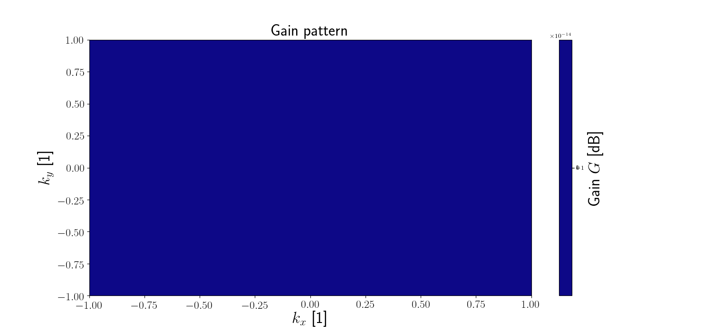

Note
Click here to download the full example code
Omni-directional antenna¶
Out:
1.0
import pyant
import numpy as np
class Omni(pyant.Beam):
def gain(self,k):
if len(k.shape) == 1:
return 1.0
else:
return np.ones((k.shape[1],), dtype=k.dtype)
ant = Omni(
azimuth=0.0,
elevation=90.0,
frequency=47e6,
)
print(ant.gain(np.array([0,0,1])))
pyant.plotting.gain_heatmap(ant)
pyant.plotting.show()
Total running time of the script: ( 0 minutes 0.453 seconds)